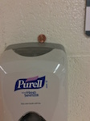

The DMS Penny Project: Kindness in the Hallways
Read on to learn more about our science project.
Our names are Sanjay, Jing, Natalka, and Katie.
The Problem?
Almost eight percent of students get bullied during the school year, according to pacer.org. Bullying happens in hallways more than any other location, making the hallway a “Bully Hotspot”. Research shows that there is very little supervision in the hallway, between classes. Most students would not even stop the unkind act while they are staying focused on their next class. Therefore, searching for ways to eliminate the “Bully Hotspot” is necessary.

It is very hard to start kindness in hallways.
Making the “Bully Hotspot” Something Positive?
Kindness is the solution! When students are kind, everyone feels welcome. Kindness can even start new friendships. Kindness can make everyone glad to be in that location and students would be more successful academically. Finally, kindness can reduce bullying. However hard it may seem, everyone should be kind.
Our Solution?
Our solution is to have pennies with kind messages placed around school hallways. Our hypothesis is that these notes will encourage kindness in the school hallways.
Some students read the penny, but then return it. This could allow for multiple students to get the kind note.
Sample Prototypes:
First:
Penny stuck on a piece of thick paper with the message. The advantage of this version is that we could write longer messages. However, this version was abandoned because our team decided that it would be nice to have the message be a surprise to the students.
Final:
Penny with sticker on the back. The advantage of this version is that the message would be a complete surprise to the person who finds the penny. Initially, we were planning to stick paper to the penny, but we were able to obtain stickers that were the correct size.
Implementation:
We have currently implemented this solution around the school. We began with seventh graders. Because of the differences in bell schedules, the seventh graders are in the hallway when we are in science class. Therefore, we are able to observe the success of our project. We later expanded this to all hallways.
We placed pennies on tables, drinking fountains, window sills, and at other obvious places.
Here are some sample locations where we left the pennies:

Project Results
Most of the pennies were taken. Students generally take the penny with them. Some students read the penny, but then return it. This could allow for multiple students to get the same kind note. Some students did ignore the pennies that were left too close to the locker. Those students were too busy getting their books to notice.
Student reaction has been postive overall. We observed students read the back of the penny and smile.
Further studies: In the future, we can consider how to expand this program to other schools. We can also have students collect the pennies and deposit them. The coins can be donated to a charity. Based on feedback, we could even make a game.
Project Feedback
Please help us with our project by taking this survey: Kindness Survey
Testimonials
"This penny said 'I am smart!' It made my day." -Student
"I really like 'Kindness is Power'" - Student
"At first I passed it by because it's only one cent, but I saw it had a note on itand then I was surprised. Now me and my friends look for them like a game."
"There's a note on the penny!"